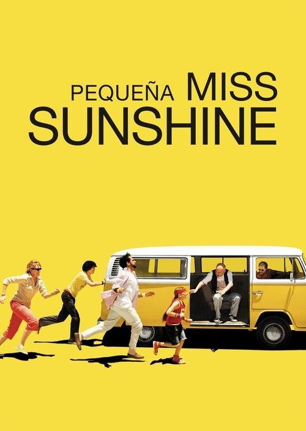

Pequeña Miss Sunshine (2006)
Sinopsis Rápida
Una disfuncional familia se embarca en un viaje en una destartalada furgoneta para que la pequeña Olive pueda competir en un concurso de belleza, un viaje que revelará sus secretos más profundos y los lazos que los unen.
Sinopsis Detallada
Pequeña Miss Sunshine sigue a la familia Hoover en un viaje caótico hacia California. El abuelo adicto a la heroína, el padre fracasado que intenta vender un programa de autoayuda, el tío deprimido y un hermano adolescente en silencio, acompañan a Olive, una niña con sobrepeso que sueña con ganar el concurso de belleza 'Little Miss Sunshine'. La película es una mezcla hilarante y conmovedora que explora temas como la familia, el fracaso y la búsqueda de la felicidad, demostrando que la verdadera belleza reside en la aceptación y el amor incondicional.
¿Por qué tenés que verla?
- Una comedia que te hará reír y llorar al mismo tiempo, con personajes entrañables y situaciones hilarantes.
- El guion excepcional y la dirección magistral de Jonathan Dayton y Valerie Faris capturan la esencia de la disfuncionalidad familiar con humor y sensibilidad.
- Su éxito crítico y comercial la consolidó como un clásico del cine independiente, influyendo en la representación de las familias en la pantalla.
- El viaje emocional que experimentan los personajes es catártico y profundamente humano.
Idea Extra
Análisis del simbolismo en la película: la furgoneta, el concurso de belleza, el discurso final de Dwain.